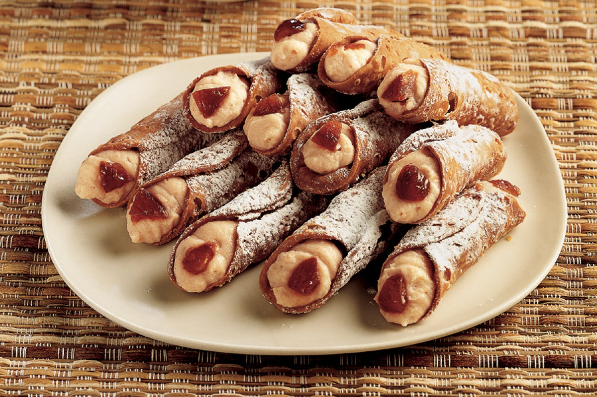

Cannoli Filled with Chestnuts and Ricotta

Place the ricotta in a bowl and add the package of chestnuts,
2 tablespoons whipped cream and 1/2 cup of Maraschino liqueur....
LIST OF INGREDIENTS
- ricotta cheese
- 5 OZ. of package of chestnuts
- 12 PCS. of cannoli shells
- 4 PCS. of chestnuts in syrup
- Whipped cream
- Maraschino liqueur
- powdered sugar
Directions
- Place the ricotta in a bowl and add the package of chestnuts,
2 tablespoons whipped cream and 1/2 cup of Maraschino liqueur.
- Carefully mix the ingredients together to form a uniform filling.
Fill a pastry bag with this mixture and pipe it into 12 cannoli shells.
- Cut the chestnuts into pieces and use them to garnish the two ends of each of
the cannoli. Place the pastries on individual dessert plates or on a serving tray,
sprinkle them with powdered sugar and serve.